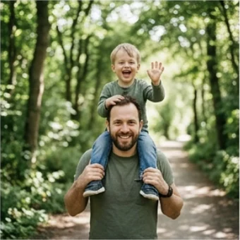
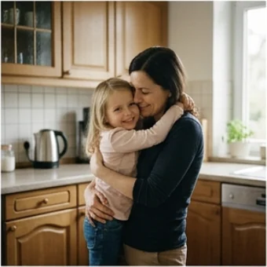
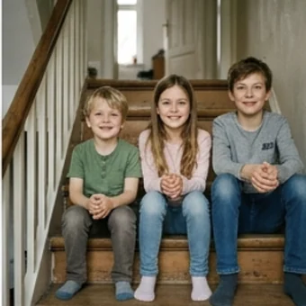
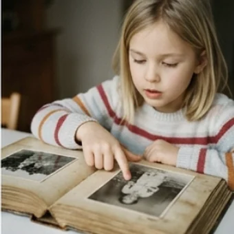

mein, dein, sein: wem gehört es?
Ein kleines Wort sagt, wem etwas gehört. Die Endung richtet sich aber nicht nach dir — sondern nach dem Wort, das danach kommt.
A1 · ab A1
Wem gehört wer und was?
mein Vater, meine Mutter, mein Kind. Das Wort für ich bleibt gleich — nur die Endung ändert sich. Und sie richtet sich nach dem Nomen danach.



Die Endung kommt vom Wort danach
Erst fragst du: Wer besitzt? Das gibt dir das Wort — mein, dein, sein. Dann fragst du: Was ist das Nomen? Das gibt dir die Endung.
| Person | der Vater | die Mutter | das Kind | die Eltern |
|---|---|---|---|---|
| ich | mein Vater | meine Mutter | mein Kind | meine Eltern |
| du | dein Vater | deine Mutter | dein Kind | deine Eltern |
| er | sein Vater | seine Mutter | sein Kind | seine Eltern |
| sie | ihr Vater | ihre Mutter | ihr Kind | ihre Eltern |
| wir | unser Vater | unsere Mutter | unser Kind | unsere Eltern |
| Sie (höflich) | Ihr Vater | Ihre Mutter | Ihr Kind | Ihre Eltern |
✔ Das ist meine Schwester.
Das ist mein Schwester.
✔ Wie heißt dein Bruder?
Wie heißt deine Bruder?

ihr, ihr oder Ihr?
Drei Wörter klingen gleich und bedeuten Verschiedenes. Im Gespräch hilft der Zusammenhang, im Schriftlichen der große Buchstabe.
Quiz: welche Endung passt?
Tippe die richtige Antwort an. Die Erklärung erscheint sofort.
Lückentext: meine Familie
Wähle in jeder Lücke die passende Form.
Person und passende Form
Tippe links an, dann rechts die Form, die dazu gehört.
Wer besitzt?
So heißt es
Sprechen — selbst bilden
Tippe auf „Neue Karte“ und antworte in einem ganzen Satz.
Weiterüben: vierzehn Aufgaben im Konto
Auf dieser Seite steht die Regel. Zum Üben liegen im Konto vierzehn weitere Aufgaben zu den Possessivartikeln — auch mit Dativ und Akkusativ.
Zu den Aufgaben🎯 Mission der Woche
Mission: Schreib oder sprich sechs Sätze über deine Familie. Benutze mein, meine, sein, seine, ihr und ihre je einmal — und prüfe jedes Mal das Nomen dahinter.
🍎 Für die Lehrkraft – Stundenablauf (60 Min.)
Schwerpunkt: die Endung vom Nomen her denken, nicht vom Besitzer. Der häufigste Fehler entsteht, weil TN vom eigenen Geschlecht ausgehen.
Lernziel
- TN bilden Possessivartikel passend zum Genus des Nomens.
- TN unterscheiden ihr, ihre und die höfliche Form Ihr.
- TN sprechen zusammenhängend über ihre Familie.
Ablauf
- 0–5' Aufwärmen mit den drei Familienbildern.
- 5–14' Regel: erst Besitzer, dann Nomen. An der Leiste zeigen.
- 14–26' Tabelle gemeinsam füllen — TN nennen eigene Familienmitglieder.
- 26–34' ihr / ihr / Ihr kontrastieren, laut lesen.
- 34–44' Quiz und Lückentext.
- 44–52' Zuordnen, danach Familienfotos beschreiben lassen.
- 52–58' Sprechkarten.
- 58–60' Mission erklären.
Häufige Fehler & schnelle Korrektur
- Endung nach dem Sprecher (ein Mann sagt mein Mutter): immer das Nomen zeigen lassen, nie die Person.
- Ihr klein geschrieben: zusammen mit Sie üben — beide groß.
- unser/unsere verwechselt: unser Vater, aber unsere Mutter — dieselbe Regel wie bei mein.
- Plural: im Nominativ und Akkusativ endet es immer auf -e (meine Kinder), im Dativ dagegen auf -en (mit meinen Kindern).
Vor dem Unterricht
- TN bitten, ein Familienfoto mitzubringen oder auf dem Handy zu haben.
- Die Tabelle als Kopie oder an der Tafel vorbereiten.
- Nach dem Unterricht auf die vierzehn Aufgaben im Konto hinweisen.